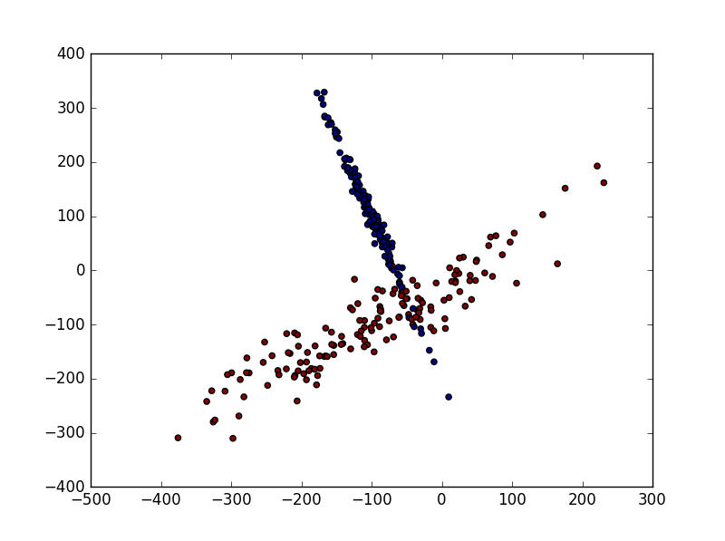
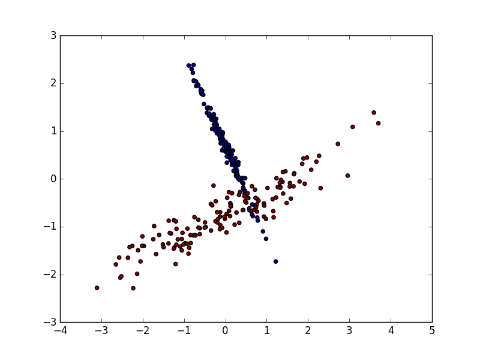
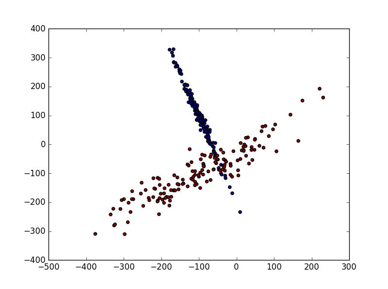
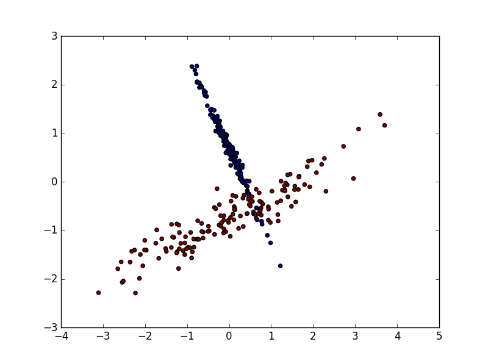

由于资料（样本）的偏差与跨度会影响机器学习的效果， 因此使用Nomalized的数据可以减少这种影响。
Nomalized
from sklearn import preprocessing import numpy as np a = np.array([[10, 2.7, 3.6], [-100, 5, -2], [120, 20, 40]], dtype=np.float64) print preprocessing.scale(a)
[[ 0. -0.85170713 -0.55138018] [-1.22474487 -0.55187146 -0.852133 ] [ 1.22474487 1.40357859 1.40351318]]
# 数据预处理模块 from sklearn import preprocessing import numpy as np # 用来将样本分割成train和test from sklearn.cross_validation import train_test_split # 生成用来识别的样本 from sklearn.datasets.samples_generator import make_classification # Support Vertor Machine 中的 Support Vertor Classifier from sklearn.svm import SVC # 数据可视化模块 import matplotlib.pyplot as plt
X, y = make_classification( n_samples=300, n_features=2, n_redundant=0, n_informative=2, random_state=22, n_clusters_per_class=1, scale=100 ) plt.scatter(X[:, 0], X[:,1], c=y) plt.show()

X_train, X_test, y_train, y_test = train_test_split(X, y, test_size = 0.3) clf = SVC() clf.fit(X_train, y_train) print clf.score(X_test, y_test)
0.644444444444
从图中可看出经过数据标准化后趋势没有发生变化 
数据经过标准化以后预测准确率提升至0.95以上
0.95
X=preprocessing.scale(X) X_train, X_test, y_train, y_test = train_test_split(X, y, test_size = 0.3) clf = SVC() clf.fit(X_train, y_train) print clf.score(X_test, y_test)
0.955555555556
查看全部代码
Sklearn Normalization
由于资料（样本）的偏差与跨度会影响机器学习的效果， 因此使用
Nomalized的数据可以减少这种影响。1. 数据标准化
2. 数据标准化对机器学习的影响
加载模块
生成用来Classification的数据

数据标准化前的预测率
数据标准化后的预测率
从图中可看出经过数据标准化后趋势没有发生变化 
数据经过标准化以后预测准确率提升至
0.95以上查看全部代码